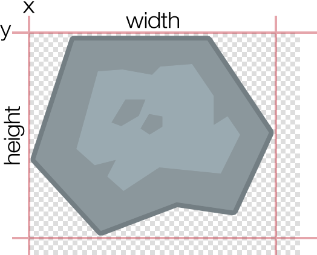
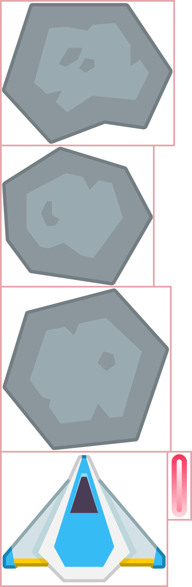
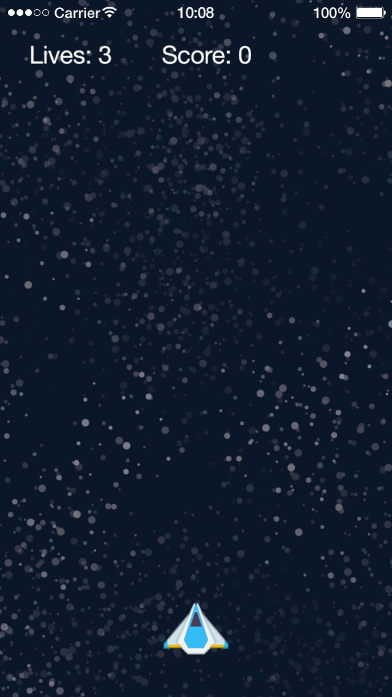

Chapter 2 — Upward & Onward
Now that we have some experience developing a game, let’s develop something a little more complex!
Design Document

Before we jump into designing and programming our next game, we need to think about the features and other aspects. This usually begins with a design document(GDD) for any major project. In the interest of moving along quickly, here’s a simple example:
| Game Title | Star Explorer — a space shooter game. |
| Description | Maneuver your starship through an asteroid field, destroying asteroids as you progress. |
| Controls | Tap on the ship to fire; drag the ship to move left and right. |
| Sounds | Shooting sound and explosion sound when the ship collides with an asteroid. |
Now we have a very basic outline for our game. Once the design document is created, you’ll be surprised at how quickly it grows!
Project Setup
With these basic design goals in mind, start a new project just like you did in the previous chapter:
From the Simulator, select New Project… from the File menu.
For the project/application name, type
StarExplorerand ensure that the Blank template option is selected.This time, under the section where you can select a screen size, choose Tablet Preset. Notice that the width and height values change to
768and1024respectively.Leave the other settings at default and click OK / Next.
Locate and open the project folder.
Settings and Configuration
In addition to main.lua, there are two important files which configure your app to work correctly on multiple types of devices: build.settings and config.lua.
Build Settings
The build.settings file provides real devices
Using your text editor, locate and open the build.settings file within your project folder. It will contain a lot of information, but let’s focus on the highlighted block of code:
settings =
{
orientation =
{
-- Supported values for orientation:
-- portrait, portraitUpsideDown, landscapeLeft, landscapeRight
default = "portrait",
supported = { "portrait", },
},
Our StarExplorer app will only be available to play in portrait mode, so we set this on the following two lines:
default = "portrait",supported = { "portrait", },
As you learned in the previous chapter, curly brackets indicate a table in the Lua programming language, and tables can contain multiple items. We could include up to four supported orientations inside this table, but since this app will support just one orientation, "portrait" is all that we need to include.
There are several additional things which can be included inside the build.settings file, but in the interest of keeping this guide as straightforward as possible, let’s move on.
Configuration Options
The config.lua file contains app configuration settings. This is where we specify what content resolution the app will run at, the content scale mode, how
Using your text editor, locate and open the config.lua file within your project folder and inspect the following highlighted lines:
application =
{
content =
{
width = 768,
height = 1024,
scale = "letterbox",
Notice that this content table contains a series of configuration settings, including:
widthandheight— These values specify the content area size for the app. Your base content area can be whatever you wish, but often it’s based around a common screen width/height aspect ratio like 3:4, set here by768and1024.
It’s important to understand that these values do not indicate an exact number of pixels, but rather a relative number of content “units” for the app. The content area will be scaled to fit any device’s screen, with subtle differences dictated by the scale definition
scale— This important setting specifies how to handle the content area for screens which do not match the aspect ratio defined by thewidthandheightsettings, for example 3:4 in this case. The two most common options are"letterbox"and"zoomEven".
"letterbox" scales the content area to fill the screen while preserving the same aspect ratio. The entire content area will reside on the screen, but this might result in “black bars” on devices with aspect ratios that differ from your content aspect ratio. Note, however, that you can still utilize this “blank” area and fill it with visual elements by positioning them or extending them outside the content area bounds. Essentially, "letterbox" is an ideal scale mode if you want to ensure that everything in your content area appears within the screen bounds on all devices.
"zoomEven" scales the content area to fill the screen while preserving the same aspect ratio. Some content may “bleed” off the screen edges on devices with aspect ratios that differ from your content aspect ratio. Basically, "zoomEven" is a good option to ensure that the entire screen is filled by the content area on all devices (and content clipping near the outer edges is acceptable).
| letterbox | zoomEven |
|---|---|
 |
 |
For this game, let’s use "zoomEven" scale mode. Change scale = "letterbox",config.lua file afterward!
application =
{
content =
{
width = 768,
height = 1024,
scale = "zoomEven",
Game Foundation
Now that you understand basic settings and configuration, let’s continue with creating the game.
Physics Setup
Like the BalloonTap project, this game will use the physics engine, so let’s configure it right from the beginning. If you’re using physics, it’s often best to include your basic physics setup code early in the program.
Using your chosen text editor, open the main.lua file within your project folder and type these commands:
local physics = require( "physics" ) physics.start() physics.setGravity( 0, 0 )
As you can see, after loading and starting the physics engine, we set gravity values. By default, the physics engine simulates standard Earth gravity which causes objects to fall toward the bottom of the screen. To change this, we use the physics.setGravity() command which can simulate gravity in both the horizontal (x) or vertical (y) directions. Since this game takes place in outer space, we are going to assume that gravity does not apply. Thus, we set both values to 0.
Random Seed
Our game will randomly spawn asteroids outside of the screen edges, so we’ll be implementing random number generation further along in this project. First, though, we need to set the “seed” for the
local physics = require( "physics" ) physics.start() physics.setGravity( 0, 0 ) -- Seed the random number generator math.randomseed( os.time() )
On the first of these two lines, observe the double minus signs (--). These are used to tell Lua that it should ignore everything else on the line. This is so that you can leave yourself comments (notes) in the code. While it might not seem important when you are initially writing the program, the more complex the app gets, or the more time that goes by before you return to work on the app again, the more important it is to include comments for reference.
When you intend to generate random numbers in an app, seed the main.lua. Doing so multiple times is redundant and unnecessary.
Including Images
Initially we’ll need just two visual assets for this project. As before, they should be placed within your StarExplorer project folder.
| File | Size (w×h) | Usage |
|---|---|---|
background.png |
800 × 1400 | The background image (stars). |
gameObjects.png |
112 × 334 | The image sheet containing our game objects. |
You can use our images as a starting point, available along with this chapter’s source files.
Loading Image Sheets
If you’ve used another game development platform, you may be familiar with the term “sprite sheet” or “texture atlas.” In Solar2D, it is called an image sheet and it allows you to load multiple images/frames from a single larger image file. Image sheets are also used for animated sprites, where frames for the sprite are pulled from the sheet and assembled into an animated sequence.
Image sheets are most easily created using a tool such as TexturePacker which collects, organizes, and packs multiple images into a compatible image sheet. While this software isn’t a requirement, it does save you time and energy.
Following your existing code, create a sheetOptions table as shown below. Note that it should contain a child table, frames, which will contain an array of Lua tables defining each frame in the sheet.
-- Seed the random number generator
math.randomseed( os.time() )
-- Configure image sheet
local sheetOptions =
{
frames =
{
},
}

When configuring an image sheet, you must specify where the images are located within the sheet. For this game, every image is different in size, so we must provide four specific properties which define the theoretical “bounding box” for the portion of the image sheet to utilize:
x— theupper-left corner point of the image in x coordinates, relative to the overall sheet width.y— theupper-left corner point of the image in y coordinates, relative to the overall sheet height.width— the total width of the image.height— the total height of the image.
With this concept in mind, add five Lua tables inside the frames table to declare the position and size of each image within the sheet:

-- Configure image sheet
local sheetOptions =
{
frames =
{
{ -- 1) asteroid 1
x = 0,
y = 0,
width = 102,
height = 85
},
{ -- 2) asteroid 2
x = 0,
y = 85,
width = 90,
height = 83
},
{ -- 3) asteroid 3
x = 0,
y = 168,
width = 100,
height = 97
},
{ -- 4) ship
x = 0,
y = 265,
width = 98,
height = 79
},
{ -- 5) laser
x = 98,
y = 265,
width = 14,
height = 40
},
},
}
The order in which you declare each image within a sheet is very important — later, when you load an image from a sheet using a command such as display.newImageRect(), you’ll need to specify the number of the frame based on the order in which it was declared in the sheet configuration.
With this table of information, we can now load the image sheet into memory with the graphics.newImageSheet() command. This accepts the name of the image file for the image sheet (gameObjects.png) and a reference to the sheetOptions table which we just created:
}, } local objectSheet = graphics.newImageSheet( "gameObjects.png", sheetOptions )
Initializing Variables
In larger programs, it’s a good idea to declare all of the variables that are used throughout the file near the beginning. This helps us stay organized and provides a quick reference if we forget what the name of a variable was and/or if the variable had an initial value.
Following the image sheet options and setup, add these lines:
-- Initialize variables
local lives = 3
local score = 0
local died = false
local asteroidsTable = {}
local ship
local gameLoopTimer
local livesText
local scoreText
Let’s examine each set of additions in detail:
First we declare variables to keep track of the number of lives remaining
(initial value of , the current score3)(initial value of , and whether the player has died0)(initially .false)Next we declare the variable
asteroidsTablewhich will be used for a very specific purpose throughout the game. As you recall from the previous chapter, the curly brackets ({}) indicate a Lua table (array). Among other things, tables are used to keep track of similar types of information. Since there will be many asteroids on the screen in this game, it’s impractical to declare each as a unique variable such asasteroid1,asteroid2,asteroid15, etc. We need a more efficient method and that’s where tables can help — essentially, tables can contain a large amount of object references and other data, growing and shrinking as needed throughout the game’s life.On the next few lines, we declare a variable placeholder for the ship object (
ship), a placeholder for a timer we’ll implement later, and two variables for the text objects which will display the player’s remaining lives and score.
Notice that these last four declarations do not begin with any initial value or type. In Lua, this is a perfectly valid way of making a forward declaration, sometimes referred to as an upvalue. Effectively, we are telling Lua about a variable’s existence, even if we don’t intend to use it until later in the program.
Great! With our initial variables set, we can begin loading objects onto the screen.
Using Display Groups
In the previous chapter, we simply placed objects on the stage — this is essentially the core layer/group in which all display objects exist. In this game, we’ll insert objects into distinct display groups for more controlled layering and organization. Basically, a display group is a special kind of display object which can contain other display objects and even other display groups. Imagine it as a blank sheet of paper on which you “draw” images, text, shapes, and animated sprites.
With this in mind, let’s create three initial display groups. Following the lines you’ve already entered, add these commands:
-- Set up display groups local backGroup = display.newGroup() -- Display group for the background image local mainGroup = display.newGroup() -- Display group for the ship, asteroids, lasers, etc. local uiGroup = display.newGroup() -- Display group for UI objects like the score
The most important aspect here is the order in which the groups are created. In the previous chapter, you learned that images loaded in succession will stack from back to front in terms of visual layering. This same principle applies to display groups — not only will display objects inserted into a display group stack/layer in this
Loading the Background
As in the previous project, we’ll load the background image first:

-- Load the background local background = display.newImageRect( backGroup, "background.png", 800, 1400 ) background.x = display.contentCenterX background.y = display.contentCenterY
These commands should appear straightforward at this point, but there is one very important difference! Inspect the first parameter to display.newImageRect() — before the image file name (now the second parameter), we indicate the display group (backGroup) in which to place the object. This is a convenient inline shortcut to specify the display group to insert the background image once it’s loaded.
Loading the Ship
As mentioned earlier, image sheets can be used as a source for an animated sequence of images (sprite) or they can be used to organize a collection of static images that will be used within your app. For this project, we’ll use the second method.
Loading an individual image from an image sheet is similar to loading it from a file. Instead of supplying an image name, however, we specify a reference to the image sheet along with a frame number. Add the following highlighted line to your project code:
local background = display.newImageRect( backGroup, "background.png", 800, 1400 ) background.x = display.contentCenterX background.y = display.contentCenterY ship = display.newImageRect( mainGroup, objectSheet, 4, 98, 79 )
Let’s inspect this command in more detail:
The first parameter specifies the display group that the object will be placed (
mainGroup). (not simply on the stage).The second parameter is the reference to the image sheet we loaded earlier (
objectSheet).Since the ship is the 4th frame in our image sheet configuration, we specify
4as the frame number (third parameter).Finally, as usual, we set the width and height to
98and79, matching the frame’swidthandheightvalues in the image sheet configuration.
Remember that we declared a forward reference for the ship object earlier in the program:
local ship local gameLoopTimer local livesText
Because of this, we don’t need to preface the new ship = display.newImageRect()local. Essentially, we are now just setting the ship variable declared earlier to an actual value
Let’s continue configuring the ship with the following highlighted commands:

ship = display.newImageRect( mainGroup, objectSheet, 4, 98, 79 )
ship.x = display.contentCenterX
ship.y = display.contentHeight - 100
physics.addBody( ship, { radius=30, isSensor=true } )
ship.myName = "ship"
With the first two commands, we position the ship at the display.contentCenterX from the previous chapter, but this time we utilize a new command, display.contentHeight. This convenient property indicates the maximum y coordinate of the content area (bottom edge of the screen). Since the ship should be positioned slightly above this point, however, we subtract 100 from this value.
Next, we add the ship to the physics engine with a radius property of 30. In addition, we specify an important isSensor=true.
Lastly, we give the ship object a myName property of "ship". This property will be used later to help determine what types of collisions are happening in the game.
Although the ship image clearly isn’t circular, we added a circular physics body (radius=30) to the ship object. For this game, we’re just being somewhat “lazy” by using this approximate body shape — once you get more comfortable with Solar2D, you’ll learn how to add a perfect
Lives and Score
Now let’s place UI labels for the player’s lives and score on the screen:
-- Display lives and score livesText = display.newText( uiGroup, "Lives: " .. lives, 200, 80, native.systemFont, 36 ) scoreText = display.newText( uiGroup, "Score: " .. score, 400, 80, native.systemFont, 36 )
To keep things simple, we use a special Lua method with the labels to show our lives and score. Placing two periods together in Lua (..) is called concatenation. Concatenation joins two strings into one. Thus, in the livesText = display.newText()Lives: and the variable lives for a result of Lives: 3lives to 3 earlier). Similarly, for scoreText, we join the string Score: and the variable score for a result of Score: 0

Let’s check the result of our code so far. Save your modified main.lua file and relaunch the Simulator. If all went well, the background, ship, and text labels should now be showing on the screen.
Everything looks good so far except for the slightly distracting status bar at the top of the screen. On mobile devices, this
-- Hide the status bar display.setStatusBar( display.HiddenStatusBar )
Finally, let’s write a function to update the text property of both livesText and scoreText. This will be similar to the function we wrote in the previous chapter. As you recall, any time you create a new label or object with display.newText(), the text’s label/value is stored in the text property of the object, so we update that property with the concatenated string value of the label and its associated variable.
local function updateText()
livesText.text = "Lives: " .. lives
scoreText.text = "Score: " .. score
end
Now that we have the basic visual objects in place, can load images from the image sheet, and update the UI labels for both lives and score, we’re ready to get started on the game logic and events!
For reference purposes, the program up to this point is available here. If your project doesn’t behave as expected, please compare this source code with your own.
Chapter Concepts
We’ve covered several more concepts in this chapter. Here’s a quick overview:
| Command/Property | Description |
|---|---|
| physics.setGravity() | Sets the x and y components of the global gravity vector in units of m/s². |
| math.randomseed() | Sets the “seed” for the |
| graphics.newImageSheet() | Creates an ImageSheet object for loading multiple images/frames from a single larger image file. |
| display.newGroup() | Creates a display group for organizing/layering display objects. |
| display.contentHeight | Shortcut for the height of the content area. |
| display.setStatusBar() | Hides or changes the appearance of the status bar on most devices. |